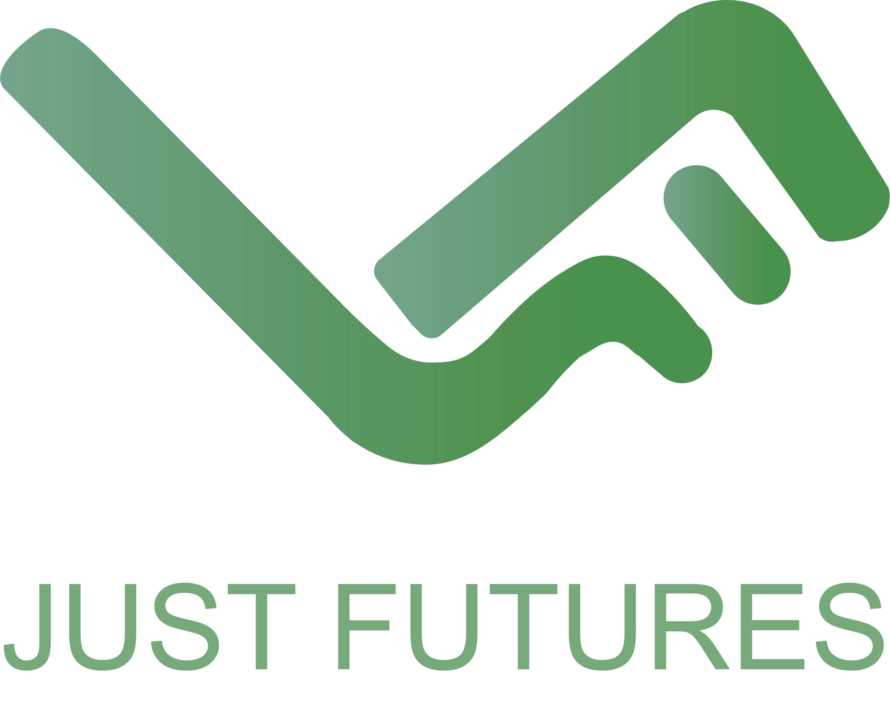

Clinet Brief
JustFutures is a transdisciplinary urban researcch team run by Professor Odessa Gonzalez from University of Michigan School of Social Work.
This team aims to investigate immigrant-run organiations in Grand Rapids, documenting their activities, functions and socio-spatial institutional embeddedness.
As a way to increase online presense, JustFutures wants to have a visual identity package to attract students' and researchers' attention.
Color Choices
The main color of this visual identity is green, with three different shades and hue.
Since this research team foucs on immigrant-run collaborative organizations, green conveys a sense of peace and opportunity.
Also, its neutrality and calmness match to a academic research team.
Typeface Selection
The typeface chosen for this logo is Gadugi and Georgia.
Gafugi is a sans-serif typeface, simple and modern.
I choose this sans-serif typeface for its professional sense and clean style.

Also, for tagline I chose Georgia. Georgia is elegant with high readability. It's a great choice for tagline content.
Logo Design
This logo design combines the initial letters of JustFutures, aiming to create a modern and professional style which fits an academic research team.
